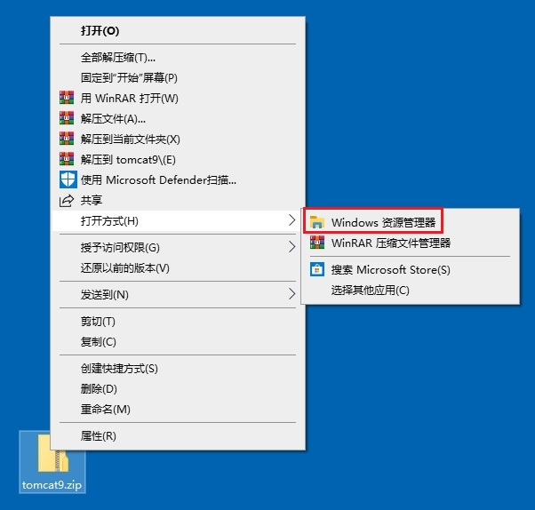
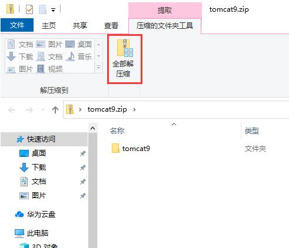
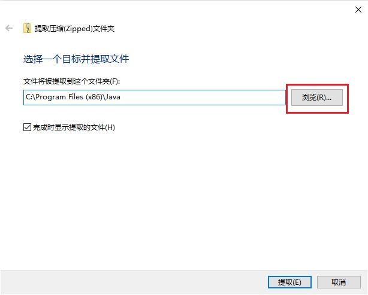
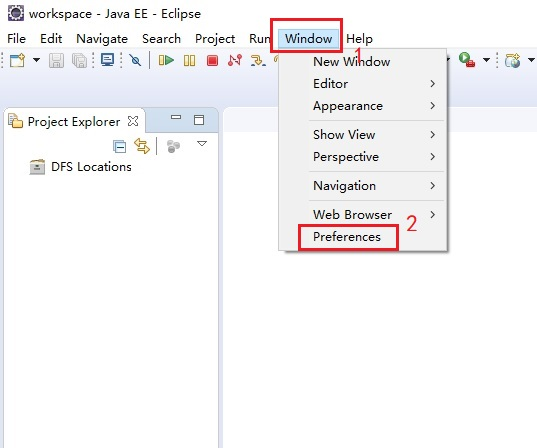
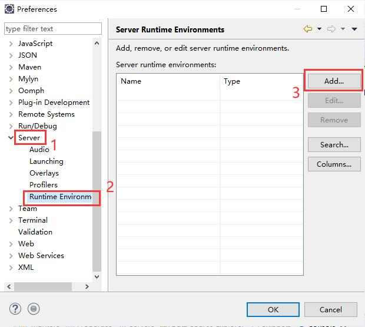
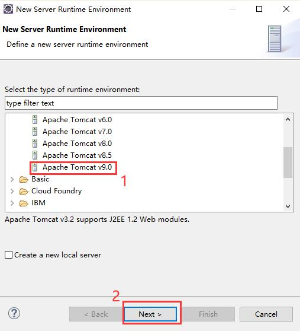
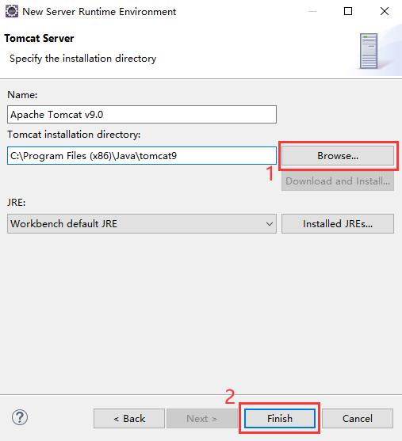
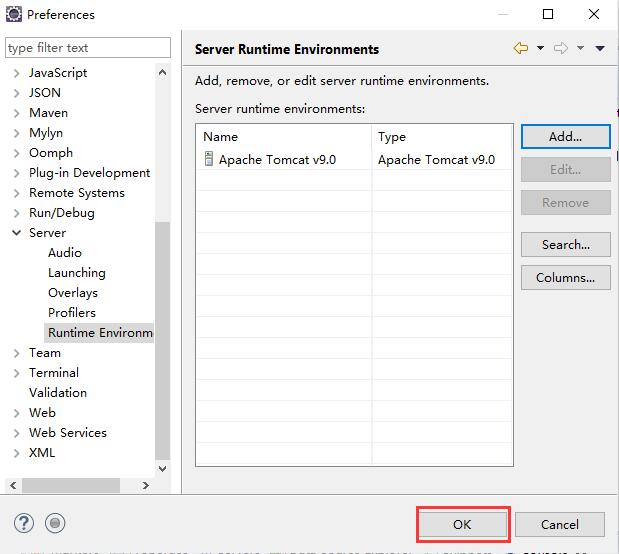
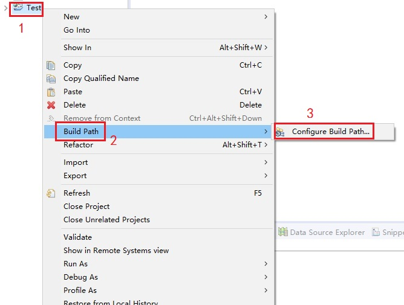

Eclipse中的Tomcat配置详解
一、先安装好Eclipse和JDK
点击查看如何创建Java开发环境
二、下载Tomcat
下载tomcat9
三、解压Tomcat
(1)在下载好的Tomcat压缩包上右击-->打开方式-->Windows资源管理器。
(2)在窗口上方功能区中单击"全部解压缩"。
(3)单击"浏览"，选择创建Java开发环境时建立的文件夹 C:\Program Files (x86)\Java ，单击"提取"。
四、在Eclipse中配置Tomcat
(1)打开Eclipse，在菜单栏中单击Window，然后单击Preferences，打开首选项页面。
(2)展开Server，单击Runtime Environments，然后单击Add新建服务器。
(3)选择合适的服务器版本，本文使用的版本为Tomcat 9.0，然后单击next继续。
(4)单击Browse，找到并选择Tomcat解压路径 C:\Program Files (x86)\Java\tomcat9 ，然后单击finish完成。
(5)回到首选项页面，此时可以看到列表中成功添加了一项Tomcat 9.0，单击OK，至此配置完毕。
五、修改项目的Bulid Path
如果在配置Tomcat前已经创建或导入了项目，就需要手动配置项目的Build Path，否则Tomcat不起作用。
(1)右击项目名称，依次选择Build Path --> Configure Build Path。
(2)单击Libraries选项卡，然后单击Add Library。